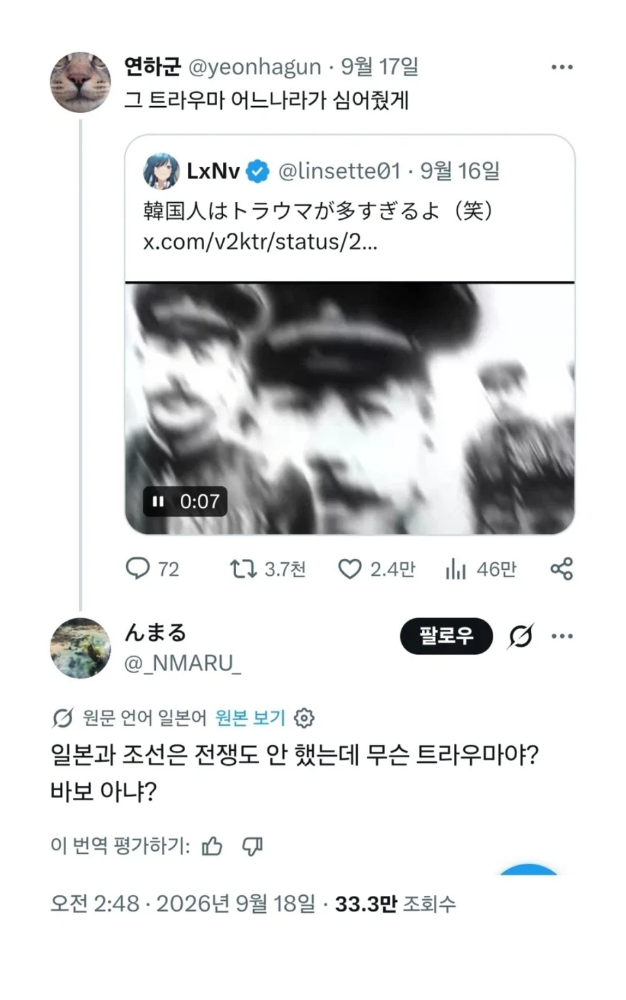
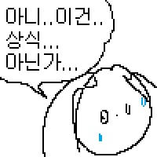

밝은 면만 가르치고 어두운 면은 생략하거나 대폭 축소한다고 함.
냄새나는것은 뚜껑을 덮는다.
쬮본 실제 지들 속담임
핵을 왜 맞았다고 생각하지
억울하게 맞았다고 생각하나봐
진짜로
아시아와 태평양의 평화를 지켰을 뿐인데 동맹국이자 주인님인 미국이 갑자기 일본 2 도시에 핵 실험으로 2발을 날림 이라고 배우지않을까?
진주만 공습하다가 대공포 맞아서 죽은걸 지들이 공격당했다고 생각하는 새끼도 있던데...
왜는 생각 안하고 ‘맞았다! 내가 당했다! 이유를 불문하고 내가 피해자다!‘
그야.. 왜 맞았는지 그 이유를 역사 시간에 안 가르쳐줌
갈쳐줘도 아주 짧게 요약으로, 지들 잘못 최소로 줄여서 갈쳐줌
이래서 맨날 역사교과서 가지고 난리법석인거임
자국 여론을 조작하는 게 가능하거든
그 여론으로 정치팔이해서 돈벌어먹고. 아주 많은 돈을
나라를 위해서 남방자원지대 좀 왔다갔다 했더니 핵이 날아왔다고!
몽골군 트라우마는 이제 다 사라진건가.
전쟁이 아니었으니까 트라우마지

그래 조선이랑은 전쟁을 안했지. '조선땅'에서 전쟁을 해서 그렇지 병신들아.
임진왜란
엥 존나했는데요
ㅋㅋ ㅅㅂ 그냥 쳐들어와놓고 전쟁타령하고있네 우리가 힘이 있었냐?
히로시마 원폭기념관 가봤는데
폭탄 맞은 후의 처참함만 담아놨지, 왜 쳐맞았는지에 대한건 하나도 없더라
학생들 단체로 체험학습인지 뭔지 데려와서 원폭기념관 앞에서 추모 시낭송하던데 존나 기괴함
거기에 조선인 위령비 왜 있는지도 모를 걸 ㅋㅋ
있는지도 모를 듯
조선인 위령비는 관리도 안하고 있다고 들었는대
아! 사람은 전쟁으로만 고통스러울 수 있구나! 동일본 대지진은 모두 행복했다는 건가?
그럼 전쟁한번없이 나라를 홀랑 넘겼단말이냐 어?
어!?
음..?
팩폭 지리네


니들이 못배운 그거때문에 명나라가 망했어
이해 못한 개붕이들이 많이 보여서 굳이 설명하자면, 저 일본인이 하려는 얘기는 '우리가 다른 나라는 전쟁을 통해서 먹은 게 맞지만, 조선은 전쟁 없이 먹었다'는 얘기다.
출병은 했지만 전쟁은 안했다네요
저런 씹본을 키워준 6.25 전쟁 일으킨 북한 김일성 안경돼지좆병신새끼 ㅉㅉ
일본은 역사교육 안한다. 그러니 좆같은 것만 기억하지.
냉정하게 조선 정도 체급 국가가 아무일없이 속국으로 편입되지는 않지
안 하긴 뭘 안 해 씨발놈이
덮어놓는다고 없어질 거라 생각하는 건가?
虎馬
진짜 역사를 안배우는구나...